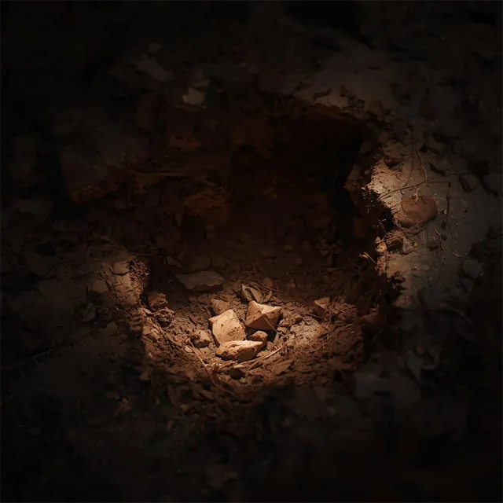
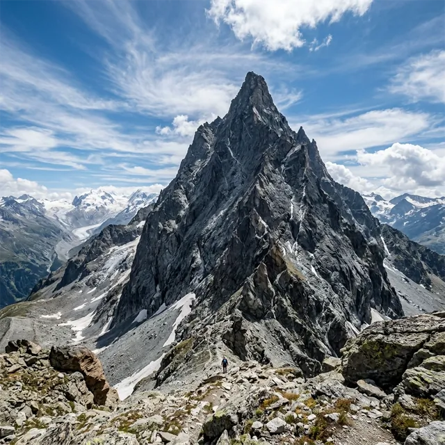

No. 007, Fault Line
Fracture · Pale Ochre · Ø 27 cm
Raked in one unbroken spiral, then left in full sun until it disagreed with itself.
Collection 07 — The Long Dry
MudPies is an independent studio devoted to a single form. Each piece is pressed by hand from earth retrieved on foot, cured slowly at altitude, and released once — never repeated, rarely explained.
About the house
01 — The House

I.
Every gram of material is collected on foot from beds the studio has visited for years, and carried home by hand in linen.

II.
Each form is made in a single sitting, by a single pair of hands. No moulds, no wheels, no second attempts.

III.
Pieces dry in open air at the curing ground, 2,940 metres up, for as long as they need. Some need a very long time.
02 — The Collection
Seven pieces formed between the thaw and the first autumn rain. One did not survive the season. It is included anyway.
Fracture · Pale Ochre · Ø 27 cm
Raked in one unbroken spiral, then left in full sun until it disagreed with itself.

Burnished · Deep Umber · Ø 26 cm
Polished with a river stone for nine evenings. The ninth evening ended early.

Vessel · Pale Ochre & Brick Clay · Ø 33 cm
Its cracks appeared at altitude in a single afternoon and resemble, depending on who is asked, a river delta or the route home.

Weather · Hollow Loam · Ø 31 cm
Left uncovered through a week of indecisive weather. The surface remembers all of it.

Returned to the earth, 14 September
Lost to the first rain of autumn, two days before release. The studio considers it among its finest work.
Two further pieces, No. 011 and No. 019, are described in the catalogue.
Open the full catalogue04 — The Library
Material is sieved three times and sorted by hand into nine earths, each named for where it was found and how it behaves under the thumb. They are kept in open bowls, dry, labelled, and spoken to only when necessary.
 E-01
E-01Leaf litter, open, forgiving.
 E-02
E-02Fine, cool, holds an edge.
 E-03
E-03Dense, clodded, stains for days.
 E-04
E-04Angular, ferric, used as punctuation.
 E-05
E-05A powder that travels on its own.
 E-06
E-06Granular, sun-coloured, rakes cleanly.
 E-07
E-07Not strictly earth. Admitted after discussion.
 E-08
E-08Heavy, plastic, used for rims and resolve.
 E-09
E-09Grey, mineral, carries the cold.
05 — About
An independent studio for formed earth. Founded in a garden bed behind a terraced house; now based in a former dairy at the edge of the Red Country.
MudPies was established at the age of six, with a borrowed spoon and no clear business plan. The plan has since been clarified. The spoon was returned.
What began as an afternoon’s work became, over a good many years, a practice: a small studio, a library of earths, a curing ground in the mountains, and the conviction that the humblest form in the world deserves the most serious attention anyone can give it.
We make one thing, and we make it slowly. Every piece is numbered, documented, photographed and released once. When a piece is lost — to rain, to gravity, to an enthusiastic visitor — that is recorded with the same care as a sale. We regard nothing we make as permanent, and nothing we make as unimportant.
People tend to ask whether this is serious. It is, entirely. That is rather the point.

Three principles, unchanged since the garden
06 — Build Your Own
Choose an earth, a form, a finish and a name. The atelier renders your piece as it would leave the curing ground, calculates its mass to the gram, and issues a certificate of formation. The commission itself, like much of what we do, is a matter of faith.